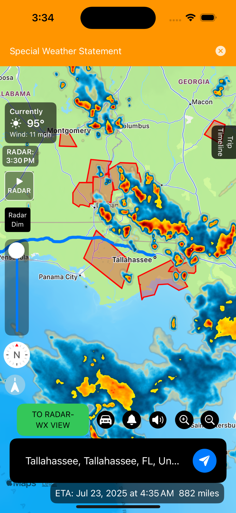
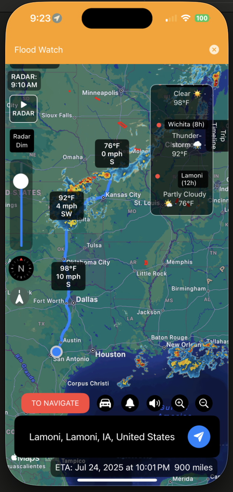
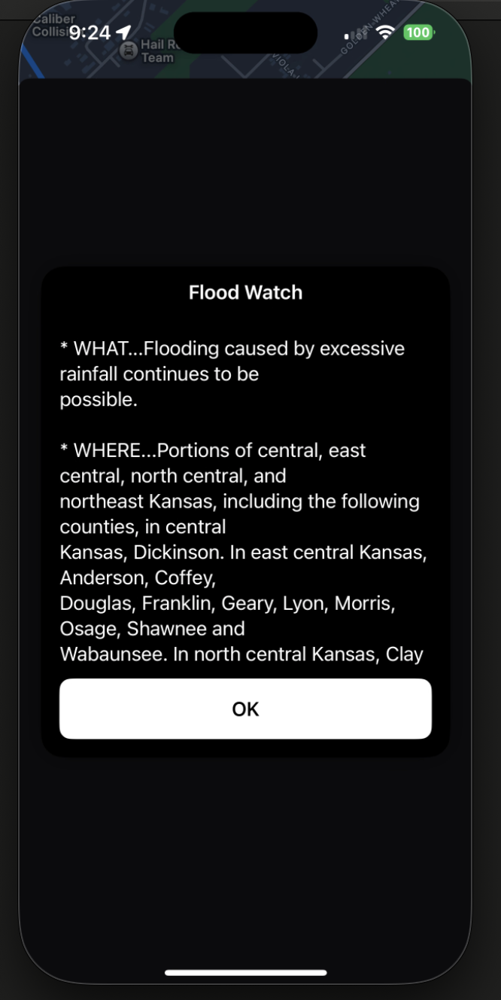
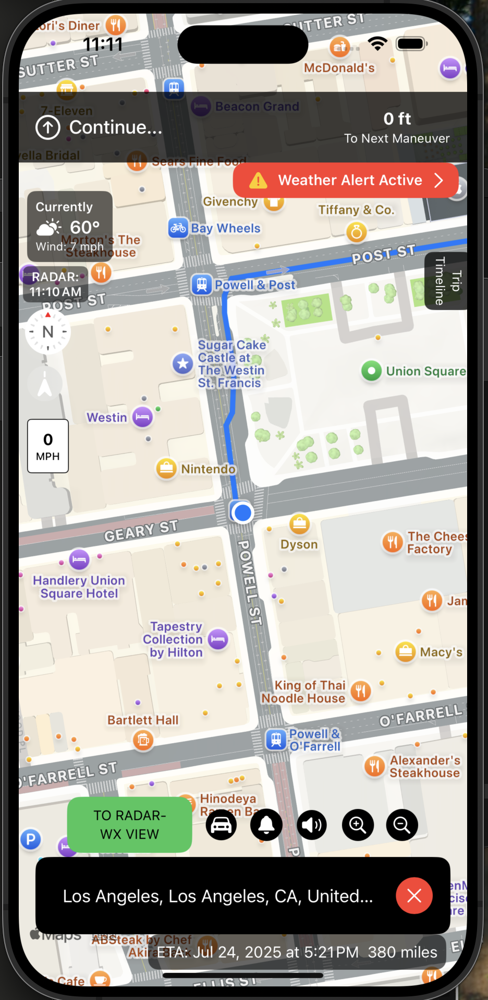

🚗 Real-Time Navigation + Weather Awareness
- 📡 Current Radar Overlays show precipitation, storms, and more in real time
- 💨 Live Wind Data (speed & direction) shown along your route
- 🚨 NWS Alerts & Warnings shown directly on the map along your path
- 🧭 Turn-by-Turn Voice Navigation — a unique feature among weather routing apps
- 🌤️ Always Shows Current Weather based on your real location
- 📍 Driving Speed Indicator displays your current speed
- 🗺️ Full Route Overview & Turn List at any time



